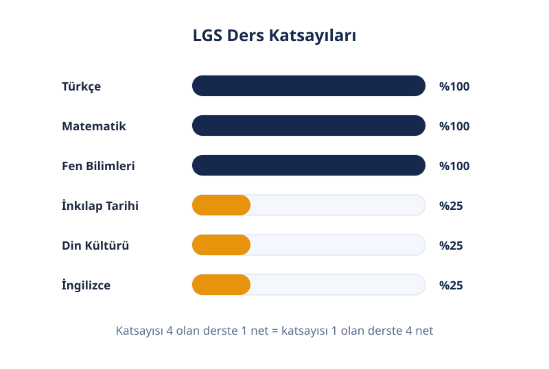
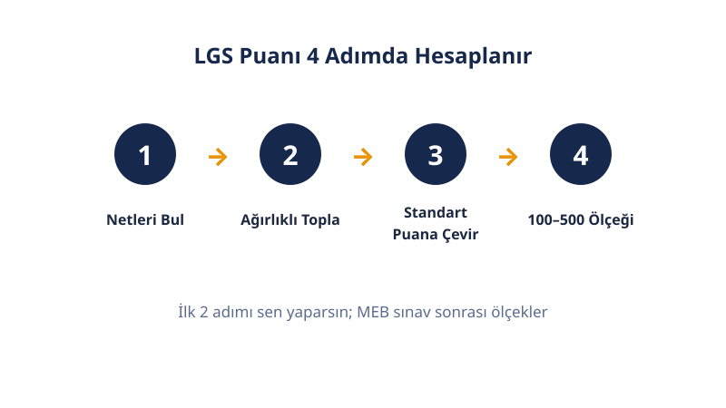

📚 LGS Rehberi
LGS'ye Nasıl Çalışılır?
Katsayı matematiğinden deneme analizine: bu rehber, LGS hazırlığını adım adım plana döker. Zamanını hangi derse ne kadar ayıracağını, denemelerdeki hatalarını nasıl düzelteceğini ve sınav günü ne yapacağını öğren.
Son güncelleme: 18 Ekim 2026 · Yazar: PuanRobotu Editör Ekibi
LGS'ye çalışmanın en verimli yolu, katsayı ağırlıklarına göre ders zamanı ayırmak, haftalık deneme çözmek ve her denemeyi hata analiziyle kapatmaktır. Türkçe, matematik ve fen bilimlerinin katsayısı 4'tür; bu 3 ders toplam puan ağırlığının %80'ini oluşturur. Sınav günü taktiği ve düzenli tekrar, planın tamamlayıcısıdır.
Öne Çıkanlar
- LGS 90 sorudan oluşur: 50 sözel (75 dk) ve 40 sayısal (80 dk) olmak üzere iki oturum.
- Katsayılar 4–4–4–1–1–1'dir: Türkçe, matematik ve fen 4; inkılap, din ve yabancı dil 1 katsayılıdır.
- Soru başına süre sınırlıdır: sözelde 1,5 dakika, sayısalda 2 dakika düşer.
- 3 yanlış 1 doğruyu götürür: emin olmadığın soruyu boş bırakmak akıllıcadır.
- Deneme analizsiz ilerlemez: her denemenin yanlış analizi sonraki haftanın planını belirler.
Kaç Ay Kaldı?
Kalan süreye göre strateji değişir: 6 aydan fazla süren varsa konu çalış, 3 aydan az süren kaldıysa deneme ve hata kapatmaya geç. Her fazın hedefi farklıdır; aynı programı tüm yıl uygulamak verimsizdir.
| Kalan Süre | Ana Hedef | Haftalık Rutin |
|---|---|---|
| 6+ ay | Konu eksiklerini kapat | Her derste konu + konu testi; ayda 1 deneme |
| 3–6 ay | Konuyu soruya dönüştür | Konu tamamlanır; haftada 1 genel deneme; hata defteri başlar |
| 1–3 ay | Hataları kapat | Haftada 2 deneme; konu tekrarı yalnız hatalı konularda |
| Son 1 ay | Ritmi koru | Deneme düzeni; yeni konu açılmaz; uyku düzeni sınav saatine ayarlanır |
Faz değişimlerini deneme sonuçlarına göre yap. Netlerin hedefinin altında seyrediyorsa konuya dönüş fazını uzat; netler dengeli yükseliyorsa deneme fazına erken geç.
Okul dönemini de plana kat. Yazılı haftalarında LGS çalışmasını hafifletip okul derslerine ağırlık vermek normaldir; çünkü 8. sınıf ortalaması da önemlidir. Okul yoğun değilken LGS bloklarını uzat, sınav haftalarında kısa tekrarlarla yetin. Program okul takvimine göre esner, kırılmaz.
Katsayı Stratejisi: Hangi Derse Ne Kadar?
Zamanını katsayılara göre dağıt: Türkçe, matematik ve fen bilimleri toplam ağırlığın %80'ini taşır. MEB'in LGS puanlama tablosundaki katsayılar şunlardır:
| Ders | Katsayı | Soru Sayısı |
|---|---|---|
| Türkçe | 4 | 20 |
| Matematik | 4 | 20 |
| Fen Bilimleri | 4 | 20 |
| T.C. İnkılap Tarihi ve Atatürkçülük | 1 | 10 |
| Din Kültürü ve Ahlak Bilgisi | 1 | 10 |
| Yabancı Dil | 1 | 10 |
Pratik kural: haftada 20 saat çalışıyorsan matematik ve fene toplam 11, Türkçeye 4, diğer 3 derse toplam 5 saat ayır. Kişisel zayıf dersin yüksek katsayılıysa onun payını artır.
Katsayının net üzerindeki etkisini sayıyla gör: matematikte 20 soruda 14 doğru, 4 yanlış, 2 boş yaptın diyelim. Netin 14 − (4/3) = 12,67 olur. Bu net, katsayı 4 ile çarpılarak puan hesabına girer. Aynı neti 1 katsayılı bir derste yapsaydın etkisi dörtte bir olurdu. Katsayı, aynı emeğin karşılığını büyütür.
Soru sayısı ile katsayıyı birlikte okumak önemlidir. Türkçe 20 soru ve 4 katsayılıdır; inkılap 10 soru ve 1 katsayılıdır. Türkçedeki 1 net, inkılaptaki yaklaşık 8 nete denk etki yapar (20×4'e karşı 10×1 oranı). Zamanını dağıtırken bu çarpanı aklında tut.
Katsayısı 1 olan dersleri küçümseme. Din kültürü ve yabancı dil soruları genellikle daha kısa ve doğrudan bilgiye dayalıdır; az çalışmayla yüksek net verir. Bunlar bedava puan olarak görülür.
Deneme Analizi Nasıl Yapılır?
Her denemeyi 3 soruyla kapat: hangi konu, hangi hata tipi, ne zaman düzelecek. Analizsiz çözülen deneme, net artırmaz.
- Netleri yaz: her derste doğru, yanlış ve boş sayılarını kaydet.
- Her yanlışı 3 gruba ayır: bilgi eksikliği, dikkatsizlik, zaman sorunu.
- Bilgi eksikliklerini konuya dönüştür: tekrarlayan konuları sonraki haftanın planına ekle.
- Dikkatsizlikleri ayrı takip et: okuma hatasıysa soruyu iki kez okuma alışkanlığı kazan.
- Net grafiği tut: haftalık netleri not et; dalgalanma normaldir, eğilimin yukarı gitmesi önemlidir.
Deneme sıklığını faza göre ayarla: konu fazında ayda 1, deneme fazında haftada 1–2. Sınava 1 ay kala çözdüğün denemeleri gerçek sınav saatlerinde çöz; vücudun o saatlerde uyanık olmayı öğrenir.
Örnek bir analiz şöyle görünür: matematikte 5 yanlışın 3'ü aynı konudansa bu bilgi eksikliğidir ve o konu haftaya plana yazılır. 2 yanlış okuma hatasındansa bu dikkatsizliktir; soruyu iki kez okuma alışkanlığıyla çözülür. Son 10 soruyu yetiştiremediysen bu zaman sorunudur; tur atlama stratejisini denemelerde çalışman gerekir. Analiz, 3 hata tipini birbirine karıştırmadan yapıldığında işe yarar.
Kendi netlerini puana çevirip hedef okulların dilimleriyle karşılaştırmak için düzenli olarak LGS puan hesaplama aracını kullan; hedefini LGS taban puanları sayfasından geçen yılın verileriyle doğrula.
Sınav Günü Taktikleri
Sınav günü taktiğin hazır olsun: saat planı, optik düzeni ve tur atlama stratejisi. 2026 sınavının oturum düzeni şöyleydi; bir sonraki sınavın saatleri kılavuzda açıklanacak:
| Oturum | Dersler | Soru | Süre | Başlangıç |
|---|---|---|---|---|
| 1. Oturum (Sözel) | Türkçe, İnkılap, Din, Yabancı Dil | 50 | 75 dk | 09.30 |
| 2. Oturum (Sayısal) | Matematik, Fen Bilimleri | 40 | 80 dk | 11.30 |
- Erken hazır ol: kimlik kontrolleri için binada en geç 09.00'da hazır bulun.
- Optiğe düzenli işaretle: her soruyu çözdükçe optiğe işle; sona bırakmak kaydırma riski yaratır.
- Tur atla: ilk turda yapabildiklerini çöz, takıldıklarını işaretleyip geç; ikinci turda kalanlara dön.
- Boş bırakmaktan korkma: 3 yanlış 1 doğruyu götürür; iki şık arasında kaldığın soruyu boş bırak.
- İki oturum arası dinlen: soru konuşmayı bırak, su iç, zihnini sayısal oturuma hazırla.
- Saatini sen yönet: sözelde 50 soruya 75 dakikan var; ilk 60 dakikada ilk turu bitir, kalan 15 dakikayı işaretlediklerine ayır.
Sınırlamalar
Bu rehber genel bir çerçevedir; öğrenme hızın ve seviyen programa bireysel ayar gerektirir. Katsayı ve sınav düzeni bilgileri MEB'in 2026 kılavuzuna dayanır; yeni kılavuzda değişiklik olursa rehber güncellenir. Hiçbir çalışma planı puan garantisi vermez. Süreç boyunca okulundaki rehber öğretmeninden destek almak, planı sana özel hale getirir.


Sık Sorulan Sorular
LGS'de hangi derslerin katsayısı yüksek?
Türkçe, matematik ve fen bilimlerinin katsayısı 4'tür; T.C. İnkılap Tarihi ve Atatürkçülük, din kültürü ve ahlak bilgisi ile yabancı dilin katsayısı 1'dir. Yüksek katsayılı 3 ders, toplam puan ağırlığının %80'ini oluşturur. Çalışma zamanını bu ağırlığa göre dağıtman gerekir.
LGS'ye günde kaç saat çalışmalıyım?
Sabit bir saat herkes için uygun değildir. 8. sınıf için günde 2–4 saat odaklı çalışma genelde yeterlidir. Saatten çok nitelik önemlidir: 1 saat analizli soru çözümü, 3 saat amaçsız soru çözümünden daha verimlidir.
Deneme netlerim yükselmiyor, ne yapmalıyım?
Önce her denemeyi analiz et: yanlışlarını bilgi eksikliği, dikkatsizlik ve zaman sorunu olarak 3 gruba ayır. Bilgi eksikliklerini konuya dönüştürüp haftalık plana ekle. Analizsiz çözülen deneme, net artırmaz.
3 yanlış 1 doğru kuralı LGS'de geçerli mi?
Evet. LGS'de 3 yanlış cevap 1 doğru cevabı götürür. Bu yüzden emin olmadığın soruları boş bırakmak, rastgele işaretlemekten daha akıllıcadır. ÖSYM sınavlarında bu oran 4 yanlışa 1 doğrudur.
Son ay yeni konu çalışılır mı?
Hayır. Son 1 ayda yeni konu açılmaz; program deneme, hata kapatma ve tekrardan oluşur. Yeni konu, sınava az kalan sürede ezber yükü yaratır ve sınav kaygısını artırır.
Hangi derse öncelik vermeliyim?
Öncelik katsayı ve kendi seviyene göre belirlenir: katsayısı yüksek ve neti düşük olan derse en çok zaman ayrılır. Katsayısı 1 olan dersler kısa ama düzenli bloklarla çalışılır; bedava puan olarak görülür.
Sınav günü yanımda ne olmalı?
Fotoğraflı ve onaylı sınav giriş belgesi, geçerli kimlik belgesi, en az iki adet koyu siyah ve yumuşak kurşun kalem, leke bırakmayan yumuşak silgi ve kalemtıraş gereklidir. Sınav binasına en geç 09.00'da hazır bulunmalısın.